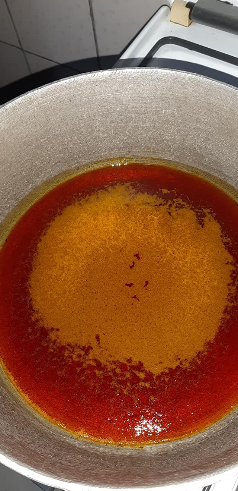
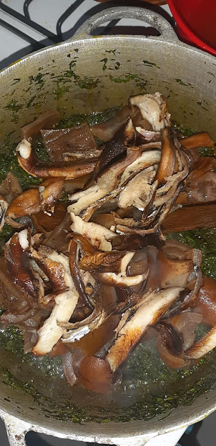
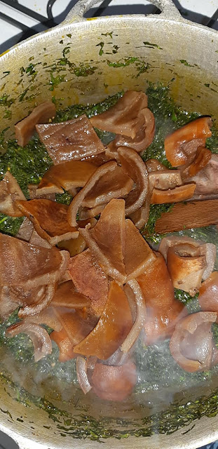
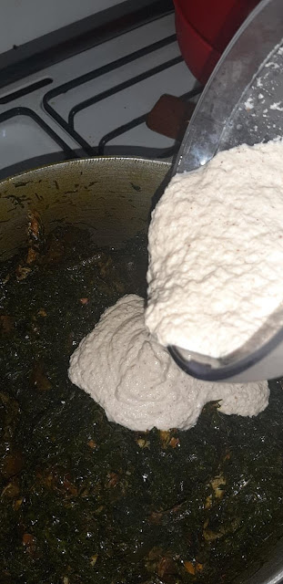
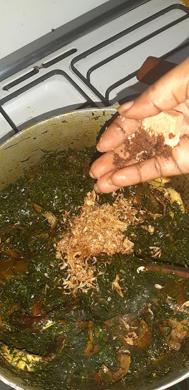
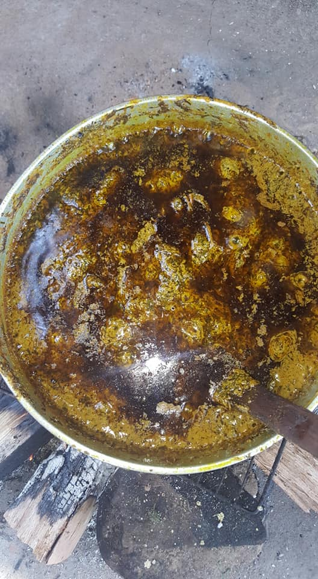

OKOK RECIPE
ORIGIN OF OKOK
he Okok is a traditional dish of the Beti people prepared with the leaves of Gnetum sp. whose name it bears in the local language.
The plant is called Ikok by the Bassa, Okok among the Béti; Eru in the North-West and South-West, Ikiokio among the Yambassa,
Kiwa among the Bafia, Koko in eastern Cameroon or even Ekoke among the Douala1.
INGREDIENTS:
- Well-washed okok leaves
- Smoked beef meat
- Smoked fish
- Crayfish
- Lightly roasted peanut paste
- Palm oil
- salt
PREPARATION:
- Let your red oil cool down, do not whiten it.
<<<<<<< Updated upstream
 Then brown your washed okok leaves even for 15 minutes.
Add your smoked beef and crayfish, stir, then the peanut paste stir for another 15 minutes.
Then brown your washed okok leaves even for 15 minutes.
Add your smoked beef and crayfish, stir, then the peanut paste stir for another 15 minutes.
- Then brown your washed okok leaves even for 15 minutes.
- Add your smoked beef and crayfish, stir
- then the peanut paste stir for another 15 minutes.
- After pour the palm nut juice stir well and simmer for at least 40 minutes
while stirring occasionally to prevent your meal from burning before cooking.
- Add the smoked fish 10 minutes from the end of cooking, this is my choice because the fish crumbles quickly.
- Salt to your liking.
=======

- Then brown your washed okok leaves even for 15 minutes.
- Add your smoked beef and crayfish, stir


- then the peanut paste stir for another 15 minutes.

- After pour the palm nut juice stir well and simmer for at least 40 minutes
while stirring occasionally to prevent your meal from burning before cooking.
- Add the smoked fish 10 minutes from the end of cooking, this is my choice because the fish crumbles quickly.
- Salt to your liking.

- BON DEGUSTATION

>>>>>>> Stashed changes